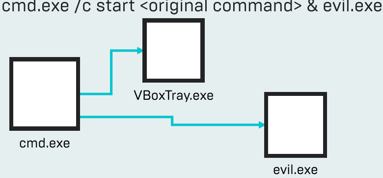

Prior to Autoruns 13.80; Hide Behind Existing Autoruns
Find an autorun like this:
c:\windows\system32\vboxtray.exe
Edit command like this:
cmd.exe /c start c:\windows\system32\vboxtray.exe & evil.exe

Autoruns parsed the command and detected the /c, reported the nested command rather than cmd.exe
Makes hiding malware harder
Nesting malicious exe under cmd.exe won't display as Microsoft applications and won't hide when hiding Microsoft entries
It was still possible to hide if first nested exec is signed by Microsoft
cmd.exe /c start consent.exe & evil.exe where consent.exe is Microsoft exec distributed with Windows
Autoruns 13.80stopped trying to parse most nested commands
cmd.exe /c evil.exe displays as cmd.exe now
No longer hides cmd.exe (and others) when hiding Microsoft entries
Persisted cmd.exe is now more obvious, but requires understanding what is legit and what is malicious